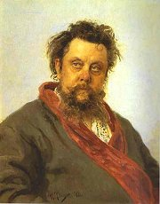
Repin: M.P.Musorgskij
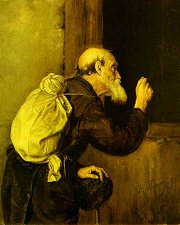
Perov: Tulák
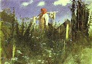
Kramskoj: Dívka s vypraným prádlem
|
RUSKÝ REALISMUS
Reformám, které se prosazovaly v západní Evropě, se Rusko dlouho vyhýbalo a řadu z nich nezavedlo vůbec. Nevolnictví zde bylo zrušeno až roku 1861 a první státní duma (obdoba parlamentu) byla svolána až v roce 1906.
Průkopníkem realismu v ruském malířství byl Vasilij Perov. V 70. letech se zformovala skupina peredvižniků. Jejími členy byli portrétista Kramskoj, sběratel Treťjakov, kritik Stasov a řada výtvarníků. K nejvýznamnějším ruským malířům patří Ilja Jefimovič Repin a Vasilij Vasiljevič Verešagin. Kramskoj, Polenov, Vasnestov a Surikov se věnovali historickým námětům, Savrasov a Levitan krajinomalbě.
Stasov byl rovněž mluvčím skupiny hudebních skladatelů Mocná hrstka (Musorgskij, Rimskij-Korsakov...), která navazovala na tvorbu M.I.Glinky.
Ruská inteligence se dělila na zapadniky (stoupence evropských zvyklostí) a slavjanovily (počvence). Počveničestvo byl myšlenkový směr, který hlásal spojení intelektuálů s rolníky (počva = půda) a návrat k venkovskému způsobu života, čímž se chtěl vyhnout kapitalistické zhoubě. Počvenci vydávali časopisy Vremja (Čas) a Epocha a patřili k nim například bratři Dostojevští.
Nejvýznamnější ruští realisté se hlásili k tzv. naturální škole (Ostrovskij, Turgeněv, Někrasov, Ščedrin, Gončarov, Dostojevskij, Tolstoj), jejímž teoretikem byl Vissarion Grigorjevič Bělinskij. Zajímali se o odvrácené stránky života, společenskou spodinu, sociální a psychický útlak. Po francouzském vzoru psali fyziologické črty. Publikovali v časopisech Otěčestvennyje zapiski (Vlastenecké zápisky) a Sovremenik. Velmi oblíbenou literární postavou byl zbytečný člověk, který se nedokáže prosadit v osobním životě ani ve společnosti, přestože k tomu má všechny předpoklady.
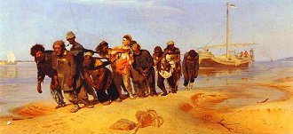
Repin: Burlaci na Volze
|
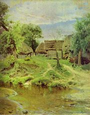
Polenov: Vesnice Turgeněvo
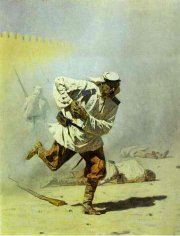
Vereščagin: Smrtelné zranění
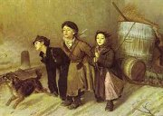
Perov: Trojka
|
Lev Nikolajevič Tolstoj
(1828-1910)
Tolstoj pocházel ze šlechtické rodiny. Hospodařil na svém panství v Jasné Poljaně. Neúspěšně se pokoušel studovat orientalistiku. Bojoval v krymské válce. Byl pedagogickým reformátorem a stoupencem „volné výchovy“. Od 80. let žil po vzoru mužiků. Pod vlivem myšlenek Petra Chelčického vytvořil učení, jehož základem bylo neodporování zlu a mravní sebezdokonalování. Za své názory byl vyobcován z pravoslavné církve.
Do literatury vstoupil autobiografickou trilogií Dětství, Chlapectví a Jinošství. Proslavily ho romány Vojna a mír, Anna Kareninová a Vzkříšení.
Ve kterém románě vystupuje Vronskij?
Zjisti, které reformy se Tolstoj snažil uvést v život.
Co se ti líbí a nelíbí na jeho pedagogických projektech?
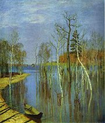
Levitan: Jarní povodeň
|
Lev Nikolajevič Tolstoj: Vojna a mír
Románová epopej Vojna a mír se odehrává v letech 1805 až 1820 a velkou část děje tvoří líčení Napoleonova vpádu do Ruska. Z 250 hlavních postav patří k nejdůležitějším Andrej Bolkonskij, který je zraněn v bitvě u Slavkova, bojuje u Borodina a nakonec umírá, a Pierre Bezuchov, který hledá naplnění života mezi zednáři. Povahy obou šlechticů jsou značně protikladné. Energický Bolkonskij zprvu obdivoval Napoleona, ale když zažil válečné útrapy, svůj názor změnil. Snílek Bezuchov chce naopak Napoleona odstranit. Oba se ucházejí o Natašu Rostovovou, která dá přednost Bezuchovovi.
Děj románu doplňují úvahové pasáže. Tostého náhled na svět reprezentuje především postava filozofa Platona Karatajeva. Některé dialogy probíhají ve francouzštině – jazyku ruské společenské smetánky.
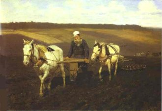
Repin: Tolstoj orající pole
|
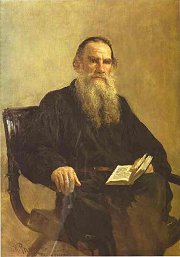
Repin: Tolstoj
Co víš o Napoleonově tažení do Ruska?
Co si myslíš o válkách mezi národy?
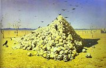
Vereščagin: Apoteóza války
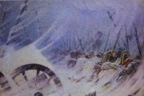
Vereščagin: Noční tábor Neporazitelné armády
|
Ivan Sergejevič Turgeněv (1818-1883)
Turgeněv pocházel z bohaté šlechtické rodiny. Studoval v Německu. Za zveřejnění nekrologu na Gogola byl vypovězen na rodný statek. S francouzskou pěvkyní Paulinou Viardotovou žil v Paříži, kde se spřátelil s Flaubertem a Zolou. Turgeněv napsal cyklus povídek Lovcovy zápisky, prózy Deník zbytečného člověka, Asja nebo První láska a romány Šlechtické hnízdo, Předvečer nebo Otcové a děti.
|
Ivan Sergejevič Turgeněv: Lovcovy zápisky
Rámec 25 črt Lovcových zápisků tvoří lovecké toulky vypravěče a jeho pomocníka Jermolaje. Jádrem tohoto cyklu próz jsou portréty statkářů (Šafář), nevolníků (Pěvci) a dalších obyvatel ruského venkova (Okresní lékař).
Tradice říká, že se ruský car rozhodl po přečtení této knihy zrušit nevolnictví.
|
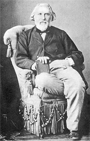
Charakterizuj hlavní postavy.
Co tě na ukázce zaujalo?
Co nového ses z ukázky dozvěděl/a?
|
Ivan Alexandrovič Gončarov (1812-1891)
Gončarov byl synem bohatého statkáře. Pracoval jako cenzor na ministerstvu národní osvěty. Zúčastnil se plavby kolem světa. Léčil se v Mariánských Lázních, kde dokončil román o „zbytečném člověku“ Oblomov.
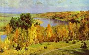
Polenov: Zlatý podzim
|
Ivan Alexandrovič Gončarov: Oblomov
Hlavní postavou Gončarovova románu je statkář Oblomov, který žije v Petrohradě z výtěžků svého majetku. Je pomalý a naprosto pasivní. Většinu času tráví na svém divanu a nechává se opečovávat oddaným sluhou. Jeho příbytek pokrývá prach a pavučiny. Ze snění ho vytrhne až podnikavý a energický přítel Štolc a seznámení s Olgou Iljinskou, do níž se zamiluje. Oblomov ale vše pokazí. Olga ho opouští a provdává se za Štolce. Hlavní hrdina opět upadá do letargie a nakonec umírá.
|
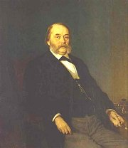
Kramskoj: Gončarov
Je Oblomov kladný nebo záporný hrdina? Proč?
Srovnej charaktery Oblomova a Štolce.
Co je oblomovština?
|
Fjodor Michajlovič Dostojevskij (1821-1881)
Dostojevskij byl synem lékaře. Živil se literaturou a své romány diktoval stenografce, která se stala jeho ženou. Za údajné veřejné čtení otevřeného dopisu Bělinského Gogolovi, které se uskutečnilo v kroužku Petraševského, byl odsouzen k trestu smrti! Na poslední chvíli dostal milost a čekaly ho „pouze“ nucené práce a vojenská služba na Sibiři, kde strávil 9 let. Dostojevskij je považován za zakladatele psychologické prózy. Napsal naturalistické romány Zločin a trest, Idiot, Běsi a Bratři Karamazovi (Legenda o velikém inkvizitorovi) nebo kratší prózy Zápisky z Mrtvého domu, Zápisky z podzemí a Hráč.
Jaká je základní zápletka románu Bratři Karamazovi? O čem pojednává Legenda o velikém inkvizitorovi?
Ve kterém románě vystupuje kníže Myškin?
|
Fjodor Michajlovič Dostojevskij: Zločin a trest
Hlavní postavou románu Zločin a trest je petrohradský student Raskolnikov, který se ocitne v těžké finanční i životní situaci. Rozhodne se ji řešit promyšlenou vraždou staré lichvářky. Přestože ji považoval za „lidskou veš“, není schopen unést břímě svého činu. Svěřuje se prostitutce Soně Marmeladové, která mu radí, aby se sám udal. Raskolnikova podezřívá policejní inspektor, ale nemá jasné důkazy. Student se nakonec přizná a je odsouzen k nuceným pracím na Sibiři, kam ho doprovází i Soňa.
Další realisté a jejich díla
M.J.Saltykov-Ščedrin: Dějiny jednoho města, Golovlevské panstvo
N.N.Někrasov: Kdo žije šťastně na Rusi, Ruské ženy, Pláč dětí
N.S.Leskov: Lady Macbeth mcenského újezdu
N.V.Gogol: Mrtvé duše, Plášť, Revizor, Ženitba
A.P.Čechov: Pavilón č. 6, Strýček Váňa, Tři sestry, Višňový sad, Racek |
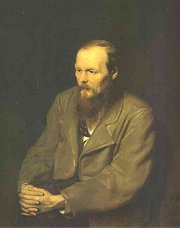
Perov: Dostojevskij
Co si myslíš o činech Raskolnikova?

Repin: Student-nihilista
|
Internetové stránky
Ruští malíři 19. století
Repin, obrazy
Vereščagin, obrazy
Ruská literatura
Russian Realism
Publičnaja elektronnaja biblioteka, Tolstoj, Turgeněv, Gončarov, Dostojevskij...
Tolstoj
Švankmajer: Vojna a mír, článek
Turgeněv
Turgeněv
Dostojevskij
Dostojevskij: Zápisky z podzemí, Bílé noci
Perov, obrazy
Savrasov, obrazy
Kramskoj, obrazy
Levitan, obrazy
Surikov, obrazy
Polenov, obrazy
Exkurze
Treťjakovská galerie, Moskva
Ermitáž, Petrohrad
Ermitáž, Petrohrad
|
Doporučená četba
Bachtin, M.: Dostojevskij umělec, Praha 1971
Bursov, Boris: Dostojevskij a jeho svět, přel. J.Žák, Odeon, Praha 1978
Dolanský, J.: Mistři ruského realismu u nás, Praha 1960
Dostojevskij, Fjodor Michajlovič: Zločin a trest, přel. J.Hulák, Lidové nakladatelství, Praha 1977
Gončarov, Ivan Alexandrovič: Oblomov, přel. P.Voskovec, Melantrich, Praha 1973
Honzík: Dvě století ruské literatury, Praha 2000
Jehlička, M.: Lev Tolstoj – vypravěč a vizionář, Praha 1999
Kautman, F,: Boje o Dostojevského, Praha 1966
Legenda o velikém hříšníkovi, život F.M.Dostojevského, přel. Zadražilovi, Lidové nakladatelství, Praha 1972
Lev Nikolajevič Tolstoj jak ho viděl..., přel. M.Jedlička, Praha 1978
L.N.Tolstoj a jeho pedagogický odkaz, Praha 1982
Masaryk, Tomáš Garrigue: Rusko a Evropa
Nešpor, Pavel: L.N.Tolstoj, Orbis, Praha 1971
Panoráma ruské literatury, Albert, Boskovice 1995
Parolek, Radegast: F.M.Dostojevskij, Orbis, Praha 1964
Pospíšil, I.: Fenomén šílenství v ruské literatuře 19. a 20. století, Praha 1995
Pospíšil, I.: Ruský román, Praha 1998
Spisy Fjodora Michajloviče Dostojevského (14 svazků)
Spisy Ivana Alexandroviče Gončarova (6 svazků)
Spisy Ivana Sergejeviče Turgeněva (10 svazků)
Spisy Lva Nikolajeviče Tolstého (26 svazků)
Tolstoj, Lev Nikolajevič: Vojna a mír (2 svazky), přel. Sýkorovi, Odeon, Praha 1969
Turgeněv, Ivan Sergejevič: Lovcovy zápisky, přel. A.Nováková, Odeon, Praha 1989
Turgeněv, I.S.: První láska a jiné povídky, přel. Dušková, Hašková, Mladá fronta, Praha 1986
Turgeněv, I.S.: Vzpomínky na literaturu, přel. Honzík, Sýkorová, Odeon, Praha 1985
Turgeněv, I.S.: Záhadné povídky, Praha 1990
Zahrádka, M.: L.N.Tolstoj a ruská próza, Praha 1996
|
Vypracuj písemný referát o některé z uvedených knih.
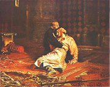
Repin: Ivan Hrozný a jeho syn
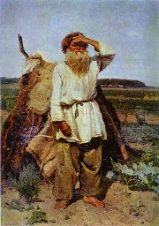
Surikov: Stařec
|
|